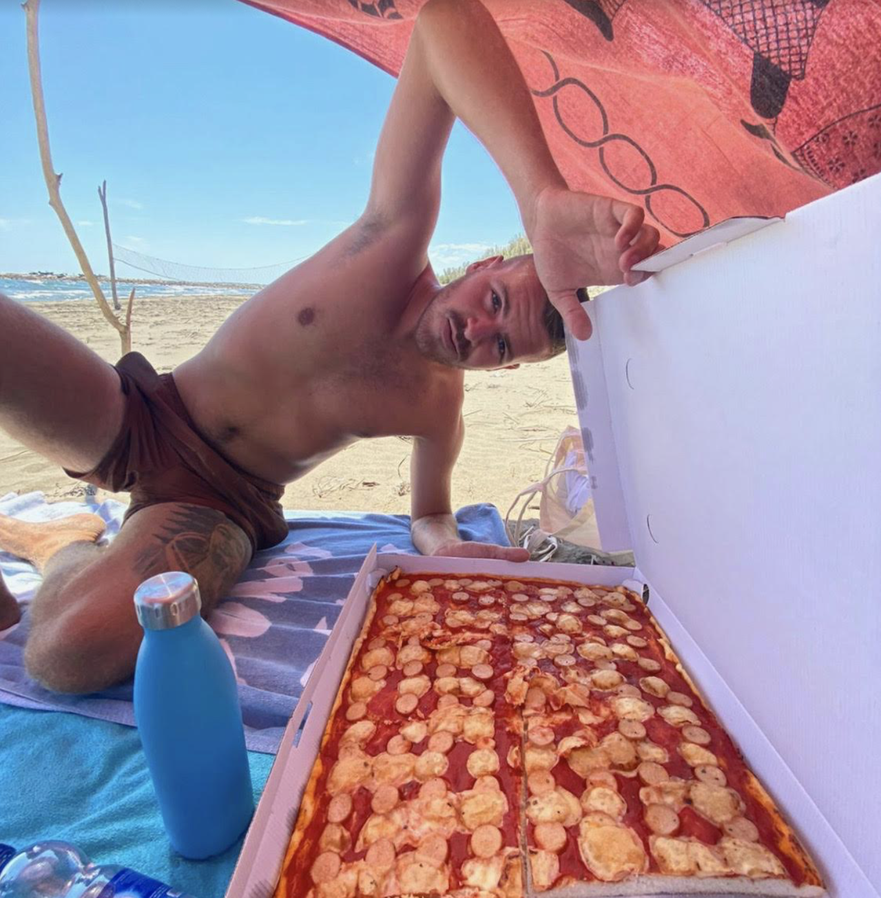
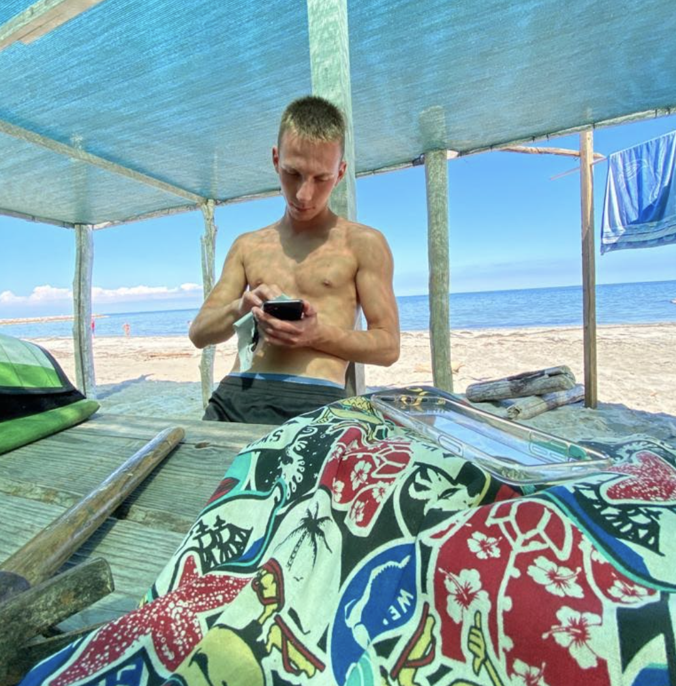
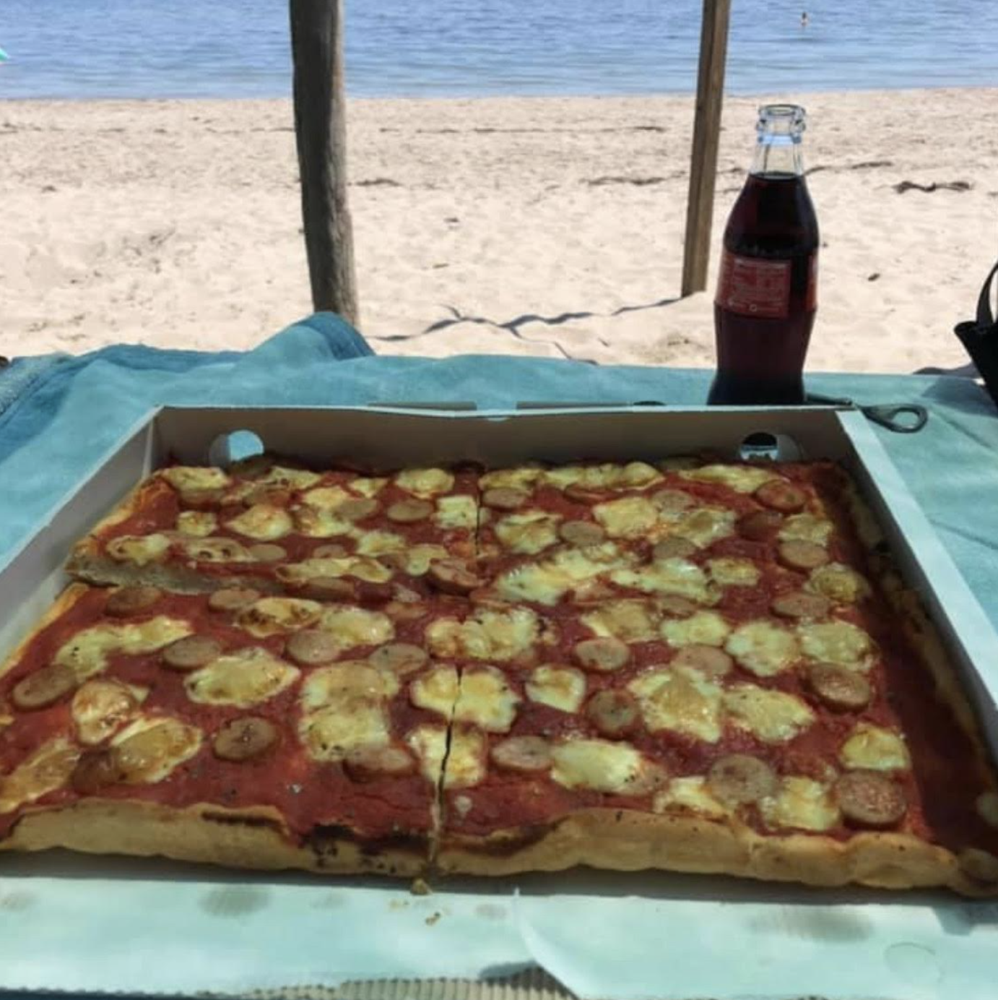

Eating pizza at the beach with a nice warm caldo weather is one your favorite things to do.
That's why you decided not to go with Simone but to keep youword parola with Alberto.
That's why you decided not to go with Simone but to keep you

Alberto invited Mattia as well, who immediately subito accepted the offer and came directly to the beach spiaggia from work.
The pizza comes from the Corrado bakery panificio shop, probably the most famous of the island. Every single person on the island at least once has eaten this pizza at the beach.

Alberto loves to keep some of the pizza for the late afternoon pomeriggio , where he can go to the rocks and enjoy it peacefully. He always asks you to go with him.